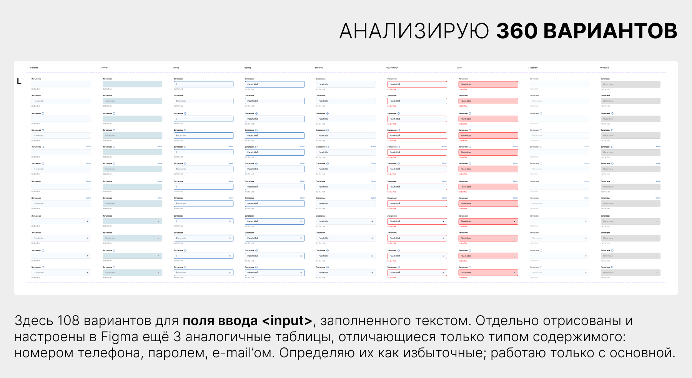
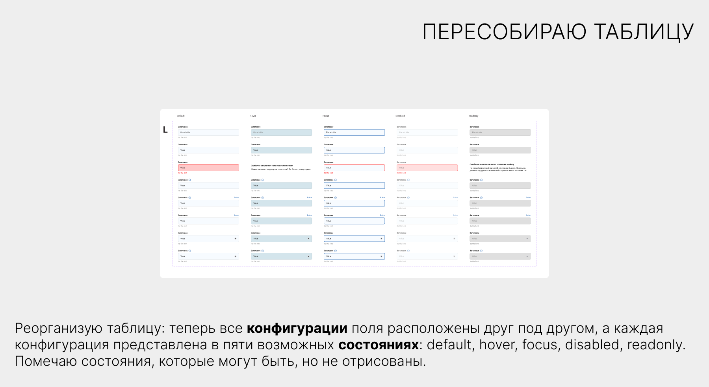

Аналитический центр Нижнего Новгорода создаёт городские интернет-сервисы. Чтобы ускорить и упростить разработку новых продуктов, команда запустила работу над дизайн-системой и пригласила меня провести её аудит.
Задача
Это был мой первый аудит дизайн-системы. Команда обратилась ко мне на самом старте, и я поставила перед собой такие задачи:
разобраться с процессом с нуля;
изучить текущие наработки;
оценить архитектуру системы;
выявить проблемные зоны;
дать эмпатичные рекомендации на основе проведённого анализа и собственного опыта.
Анализ
Первым этапом я провела интервью команды. Мне нужно было разобраться в стоящих перед ними задачами, имеющихся ограничениях и ресурсах.
Команда из трёх дизайнеров работает над дизайн-системой для инфраструктуры городских порталов, объединяющей три направления: горожане, юридические лица и администрация. Задача — разработать единый стиль инфрастуктуры, при этом сохранив индивидуальность каждого направления.
Несмотря на разные конечные аудитории, все решения принимаются городской администрацией. Это накладывает стилистические ограничения и усложняет согласование — команда полностью согласна с этой оценкой.
По результатам интервью у меня появилась гипотеза: ребята хотят оптимизировать процессы, но пока не до конца понимают, как именно дизайн-система поможет им в этом и как её правильно строить.
Второй этап аудита включал проверку этой гипотезы — для этого команда предоставила свои наработки. Руководитель отдела разработки при этом задал вопрос: «Не слишком ли мы нагружаем дизайнеров?»
Процесс
Ответ на заданный выше вопрос: да. Дизайнеры начали работу от частного к общему и углубились в разработку одного компонента — поля ввода input — пытаясь предусмотреть все возможные варианты. Я просмотрела 360 различных вариантов поля ввода и поняла, что масштабировать такую громоздкую конструкцию на три визуально разных направления будет почти невозможно.
Нужен был редизайн и я вооружилась бритвой, чтобы отсечь всё лишнее. Выявила как системные ошибки (неполное понимание поведения компонента в браузере), так и технические (неоптимальное использование возможностей Figma). Мне удалось пересобрать макет, полностью сохранив изначальный дизайн, и сократив количество сущностей в семь раз: с 360 до 50.
Процесс упрощения и пересборки компонента на слайдах:


Технологический стек: дизайнеры работают в Figma, разработка использует VueJS, HTML, CSS.
Выводы
Я проанализировала все предоставленные мне материалы и подтвердила свою гипотезу.
Команда дизайнеров начала работу, двигаясь от частного к общему — сфокусировалась на том, чтобы сделать как можно больше опций для одного компонента, но не рассматривая его в контексте всей веб-страницы и дизайн-системы в целом.
Кроме того, стало понятно, что для многих в команде это первая работа с дизайн-системой. Вместо того чтобы выстраивать процессы, они копировали подходы крупных корпораций, что усложняло задачу.
Мой опыт подсказывал, что такой подход съедает много времени, создаёт ощущение, что дизайн-система мешает, а не помогает, и рискует привести к выгоранию команды.
Результат
Результатом моего аудита стал технический редизайн предоставленных макетов и рекомендации по выстраиванию флоу.
В рекомендациях я:
предупредила о рисках выбранного командой подхода к работе;
предложила системный подход к управлению разработкой дизайн-системы, сформулировала вопросы, на которые нужно ответить, чтобы найти идентичность проекта целиком, потом понять, чем отличаются друг от друга его направления, и только затем уже переходить к разработке молекул и атомов дизайн-системы;
подсказала аргументы, которые лидер команды дизайнеров сможет использовать, чтобы защитить интересы своей команды перед разработчиками и менеджментом.
Разработка дизайн-системы для онлайн-курса (Яндекс Практикум)
Контекст
Яндекс Практикум — центр обучения IT-профессиям. Особенность Практикума — асинхронный формат и упор на практические навыки. Студенты знакомятся с материалом в удобное для себя время и тут же практикуются в тренажёре.
Тренажёр — миниатюрная веб-страница, встроенная в текст урока, в которую студент должен дописать недостающий код.
VЁRSTKA — курс Практикума по HTML и CSS вёрстке, в работе над которым я участвовала как продуктовый дизайнер.
Задача
У курсов Практикума мощная визуальная идентичность: иллюстрации, инфографика и увлекательный нарратив — всё работает на вовлечение студентов. Тренажёр — место, где код встречается с интерфейсом — должен выглядеть не как чужой элемент, а органично вписываться в эту эстетику.
Над написанием курса VЁRSTKA работали 4 разработчика с разным уровнем — от джуна до сениора. Моей задачей было разработать дизайн-систему, которая обеспечит единообразие визуального оформления тренажёров и их соответствие стилю всего продукта, несмотря на разницу в опыте разработчиков.
Решение
Инструментов на старте у меня было только два: визуальный референс от ведущего иллюстратора и собственный опыт прохождения курсов по веб-вёрстке, давший мне представление о том, как устроено обучение в тренировочной среде, т.е. что именно я буду дизайнить.
Я выделила ключевые элементы изобразительного языка, чтобы опираться на них:
контраст тонкой линии и жирного текста;
плотная компоновка элементов;
яркие фирменные цвета;
умышленное нарушение правил.
Также я учла ограничения. Особенность тренировочной среды в том, что это не готовый веб-сайт, а анатомическое пособие по веб-разработке. Код каждого урока преподаватель собирает вручную, оставляя в нём лакуны, которые потом будет заполнять студент. Поэтому код должен быть предельно простым и объяснимым.
В рамках этого стиля и ограничений я разработала и сверстала базовые веб-элементы — от заголовков до форм, — чтобы авторы курса могли быстро собирать тренажёры из готовых «кирпичиков».
Результат
Моя дизайн-система позволила интегрировать тренажёры бесшовно в общую визуальную экосистему курса, поддерживая и усиливая его нарратив. Благодаря ей:
курс вышел в срок — за 20 месяцев;
работа 4 разработчиков с разным опытом была скоординирована и едина;
появилась база для дальнейшей поддержки и масштабирования курса.
Команда
Тимлид, автор уроков — Александр Патлух
Авторы уроков:
Алёна Батицкая
Алексей Казаков
Наталия Рыжова
Ведущий иллюстратор — Анна Римша
Нарративный директор — Елизавета Золотухина
Дизайн-система контента веб-справочника (Дока)
Контекст
Дока — open-source справочник по веб-технологиям, который развивается силами пользователей: они создают и дополняют статьи, поддерживая базу знаний актуальной.
Первичное наполнение справочника делала команда из 6 веб-разработчиков. Каждый автор писал статьи в своей манере, дополняя текст графикой и интерактивными примерами по своему усмотрению. Дизайна сайта в этот период ещё не существовало, также как и единого подхода к написанию и оформлению статей.
Задача
Я присоединилась к команде из арт-директора, иллюстратора и литературного редактора в роли дизайнера-разработчика. Нам предстояло выработать стиль проекта, его tone of voice, и подготовить проект к запуску в формате open-source. Для этого нужно было решить следующие задачи:
определить идею проекта и подобрать соответствующий визуальный стиль;
упаковать выбранный стиль в дизайн-систему, с помощью которой авторы смогут самостоятельно создавать графику и примеры с минимальным участием дизайнеров;
опубликовать дизайн-систему, чтобы ей могли пользоваться не только специалисты, но и пользователи проекта, среди которых есть джуны, дизайнеры, продакты и другие.
Анализ
Изучив наработки авторов, мы определили, что наполнение справочника состоит из контента четырёх типов:
литературный текст самих статей;
примеры кода — демонстрация того, как описываемый в справочнике компонент выглядит и работает на практике;
обложки статей, передающие настроение и идентичность.
Соответственно, дизайн-система должна была покрыть все эти элементы и связать их в единую визуальную и функциональную экосистему.
Решение
Моей сферой ответственности стали примеры кода благодаря тому, что я владею навыками дизайнера и веб-разработчика одновременно. Пример кода в Доке это веб-страница, посвящённая описываемому в статье компоненту. Моё понимание тем, о которых пишут разработчики, сильно облегчило задачу: я не только оформляла элементы веб-страниц, но и помогала разработчикам выразить идеи максимально понятно для читателя.
Готовый пример кода из статьи про CSS-анимации в Доке
На подготовительном этапе я нарабатывала визуальную базу, оформляя веб-страницы одну за другой. Миновать этот этап было невозможно — тексты и примеры были разрознены по личным аккаунтам авторов, а весь контент хранился только в виде кода в репозитории на GitHub.
Накопив 20-30 дизайнов веб-страниц, код которых был полностью под моим контролем, я смогла проанализировать закономерности, согласовать внешний вид элементов с другими составляющими будущей дизайн-системы, и приступить к её созданию.
Результат
Результатом стала система визуального оформления примеров кода, согласованная с дизайном технических схем, иллюстраций и общей платформы.
Дизайн-система оформлена в виде документации, где дизайн элементов сопровождается сниппетами CSS и JS кода, которые каждый новый автор может скопировать в свой проект. При этом фреймворков в системе нет: код примеров сделан максимально дружелюбным для джуниоров, чтобы даже начинающий разработчик мог быстро понять, как всё работает. Это отражает ключевую ценность Доки — снижать порог входа в веб-разработку.
К запуску проекта нам удалось создать дизайн-систему контента, которая содержит:
руководство по литературному стилю, включающее как языковые аспекты, так и tone of voice проекта;
дизайн-систему примеров кода, включающую дизайн компонентов, кодовую базу и документацию;
графический конструктор для создания схем в Figma, сопровождающийся инструкцией по использованию конструктора;
уникальный стиль иллюстраций — единственный непубличный компонент дизайн-системы, потому что личный стиль иллюстратора — это ценность, которую нужно беречь.
В соответствии с дизайн-системой к запуску проекта было оформлено 300+ иллюстраций, схем и примеров.
Время на создание схем и примеров для статей сократилось с нескольких дней до нескольких часов.
В настоящее время дизайн-системой доки пользуется 6 человек из редакции и 460+ внешних контрибьюторов.
Команда
Арт-директор, автор дизайн-системы графики — Валентина Смирнова
Продуктовый дизайнер, автор дизайн-системы примеров — Светлана Коробцева
Иллюстратор — Кира Кустова
Литературный редактор — Ольга Алексашенко
Дизайн сайтов с ограничением в технологиях
Контекст
Яндекс-практикум — онлайн-школа с упором на практические навыки. К концу курса студенты выполняют несколько полноценных проектов для портфолио. На курсе по HTML и CSS вёрстке они сверстают несколько сайтов.
Задача
Я была рада поработать руками и присоединилась к команде разработки курса VЁRSTKA в роли UI-дизайнера.
Главная особенность технического задания при разработке учебных макетов это ограничение по технологиям. Сайт должен:
быть свёрстан с использованием только тех знаний, которые уже есть у студента;
включать полный набор изученных технологий для закрепления навыков.
Таким образом, моя задача — подобрать визуальное решение для имеющихся веб-технологий и не выйти за их рамки. Это как дизайнера это требует не только дизайнерских навыков, но и хорошего собственного знания веб-вёрстки.
Также я поставила перед собой личную цель: сделать дизайны максимально разными, от привычного лендинга с красивыми картинками до обскурного панка, который, на первый взгляд нарушает все правила, но, на самом деле, следует им.
Решение
Для каждого сайта писательницей курса был подготовлен контент, рефлексирующий над процессом обучения. Мой флоу работы над каждым макетом состоял из нескольких этапов:
Анализ контента, поиск визуальной метафоры.
Изучение технических требований.
Сборка скелета сайта в Figma.
Поиск оформительских решений для всех требующихся технологий в рамках выбранного стиля.
Передача макета разработчику.
Подгонка в свёрстанного сайта и макета друг под друга в технике Pixel Perfect.
Обычно при подгонке в технике Pixel Perfect разработчик подстраивается под дизайн, но в случае с учебными макетами процесс идёт наоборот: важно сохранить код максимально лаконичным и логичным, поэтому при прочих равных лучше подвинуть что-то в макете.
Результат
Для курса я создала 6 проектных работ нарастающей сложности.
1 проектная: Оно тебе надо.
Простой десктоп с сетками, текстом и изображениями. Задача — показать, что даже на базовом уровне можно сделать страницу современной и необычной. Никаких скучных лендингов с кнопкой "позвони".
2 проектная: Надо сделать идеально.
Для студента: технологии встраивания видео. Для меня — минимум средств, в котором всё ещё нужно сохранить идентичность. — вместо тире — моя маленькая шутка.
3 проектная: Посмотри в окно
Видео, подгрузка контента, формы. Сделать что-то вроде YouTube, но не YouTube. Курсовая ирония в действии.
4 проектная: Обходные стратегии
Адаптив на 2 размера и две цветовые схемы. Осознанным решением было не делать черное и белое. Опираясь на тему контента, выбрала цвет бумаги и гармоничный к нему темно-синий. Буквицы и элементы газетного дизайна поддерживают стиль.
5 проектная: Сложно сосредоточиться
Адаптив на 3 размера, две цветовые схемы, сложные эффекты, masonry. Чтобы обыграть тему наведения фокуса я использовала тень текста (несфокусированная картинка расплывается), а картинки в галерее расположила подобно диафрагме фотоаппарата, обращаясь к теме оптики.
6 проектная: Закрывающий тег
Все технологии предыдущих работ плюс анимации, вариативные шрифты, паттерны и режимы наложения. Я использовала стиль пиксель-арт по двум причинам:
чтобы графические элементы, которые предстоит оживлять, состояли из простейших для анимации фигур — квадратов;
как метафору изучения чего-либо, ведь квадрат размером 1 х 1 пиксель это минимальная единица изображения на экране, его основа.
Команда
Тимлид — Александр Патлух
Автор текстов — Елизавета Золотухина
Контакты
Света Коробцева
Ведущий дизайнер с фокусом на пользовательские интерфейсы и 12 годами опыта в веб-разработке, включая 3 года на позиции синьора. Умею программировать, менторила дизайнеров в онлайн-образовании и закончила управленческую вышку. Строю дизайн, который решает задачи, помогаю команде видеть направление — и не терплю говна.